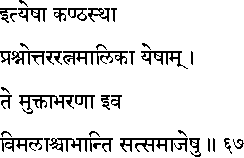
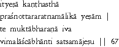

|

|
Verse 67 - Meaning:
One whose neck, (ity-esaa) the source of voice (kanthasthaa) is adorned with this Prasnottara-ratna-maalika, will shine in the assembly of the wise, as if he is wearing a necklace of pearls (te-muktaabharanaa iva). He will shine like a pure luminous body (vimalaascaabhaanti) in the assembly of the wise (sat-samaajesu) .
|